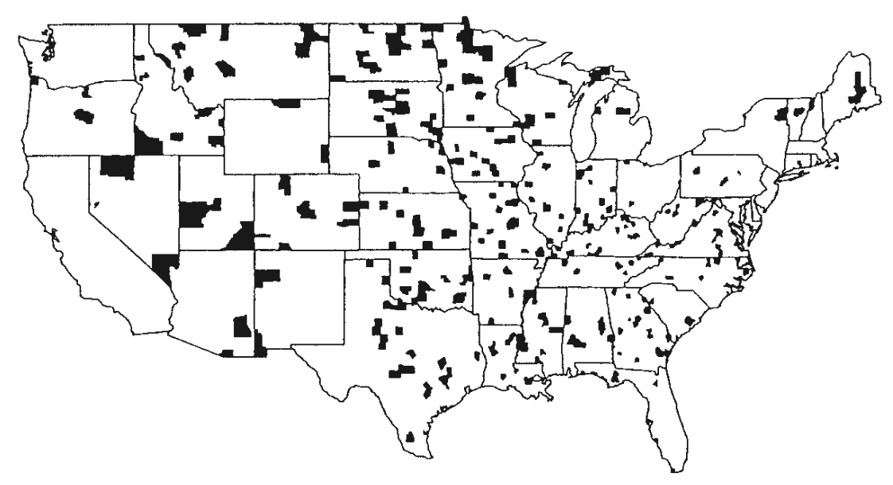

2025-09-08
Professor Becky Tang
Course website: https://midd-stat201a-fall2025.github.io/
Undergraduate at Swarthmore College, majors in Mathematics and Computer Science
PhD in Statistical Science from Duke University
Joined Middlebury in Fall 2022
Hobbies: mushroom foraging, cooking for friends, running
Disclaimer: I talk EXTREMELY fast so please don’t hesitate to tell me to slow down/repeat myself
What is statistics? What is data science?
By the end of this course, you will:
R (and in particular, the tidyverse syntax)We assume zero background in statistics and data science
There is a large computing component, though not as much as in STAT 118
MATH 121 (Calculus 1) pre-req
Come to class as awake as possible!
Takes notes! Each day’s slides will be made available on the course website by 10pm the night before. I recommend either:
Printing out the PDF version of slides to write notes on during class
Downloading PDF of slides to iPad/tablet/laptop and write notes on then using device
Taking supplemental notes on paper/device
Re–visit notes within 24 hours of class
We will frequently make use of our laptops. Please bring one with enough charge to last the entire class each day we meet!
Try to resist the temptation to do other tasks (e.g. check email, online shop, watch shows) when your laptop is open
Keep an open mind and don’t be afraid to ask for assistance or tell me to slow down!
Resist the temptation of using ChatGPT or other generative AI tools
Problem Set 0: answers to a brief questionnaire are due before next class. See the course Schedule page for details!
All coding practice and homework assignments will be submitted to Gradescope via Canvas. You should all be able to access your Gradescope account using your Middlebury College credentials.
On Canvas, assignments can be found in both the Assignment tab and the Gradescope tab
Submissions can be resubmitted as many times as you like up until the due date
We will walk through how to submit an assignment together, but instructions + video can also be found here
Counties of the U.S. within the bottom 10% of death rates for kidney cancer for white males, 1980-1989.
What do you notice? What might be the explanation?
Counties of the U.S. within the top 10% of death rates for kidney cancer for white males, 1980-1989.
What’s going on? Let’s do some digging…
Death rate for kidney cancer: https://seer.cancer.gov/statfacts/html/kidrp.html
County sizes: https://en.wikipedia.org/wiki/County_statistics_of_the_United_States
Data do not come from thin air! Data have to be collected in some way.
This usually takes the form of sampling a subset of individuals from a target group of interest
A case is a fancy term for saying one observational unit
What are the target populations and cases in the following?
What is the average height of trees on Middlebury College campus?
What proportion of current Middlebury professors attended a liberal arts college?
Over the last five years, what is the average time to complete a degree for Middlebury students?
Often times, answering a research question simplifies to understanding a numerical summary.
(Population) parameter: a single numerical summary calculated from (or considered for calculation from) the entire population
(Sample) statistic: a single numerical summary calculated from a sample
Why do we differentiate? It’s always good to remember that we are trying to answer questions about the population!
For every population parameter, there is an associated sample statistic
In kidney cancer data, we might want to know a particular county’s true kidney cancer rate (for white males, 1980-1989)
Is the quantity of interest a population parameter or a sample statistic?
Suppose the reported rate is 10%. Is 10% the value of a population parameter or a sample statistic?